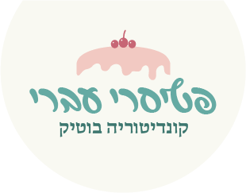

ליה עברי, הכוח המניע שמאחורי "פטיסרי עברי",
היא הדור החדש של הקונדיטוריה הישראלית - צעירה, מלאת תשוקה, ובעלת חזון ייחודי.
"לאחר לימודים במוסד קולינרי יוקרתי בפריז, שם התמחתה באפייה וקונדיטוריה קלאסית, היא חזרה לארץ עם מטרה ברורה: ליצור קונדיטוריה עברית מודרנית, המשלבת מסורת, אומנות, חדשנות וניחוח ישראלי.
"פטיסרי עברי" הוא הגשמת החלום שלה - מקום שבו כל עוגה מספרת סיפור וכל מאפה נושא זיכרון. ליה שואפת להביא חוויה קולינרית שמעוררת רגש, תוך שימוש בחומרי גלם מקומיים, מתכונים קלאסיים, ואסתטיקה המפגישה בין הקונדיטוריה הפריזאית לטעמים של המזרח התיכון.
כשנכנסים למאפיית "פטיסרי עברי", מריחים לא רק שוקולד וחמאה אלא גם את התשוקה והאהבה של ליה והצוות שלה, שמאמינים שעוגה טובה היא כמו
זיכרון מתוק - היא נשארת איתך הרבה אחרי הביס האחרון.